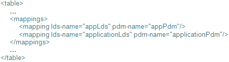

Table Joins tab
The Table Joins tabs contains the <tables> element that is used to hold information on all the physical tables in the database that contain data to be used for the reports. Each physical database table should have its own <table> element. The <tables> element would be created in a third-party XML editor, and pasted into the Table Joins window.
For sample content that can be copied and pasted as a guide to creating customised <tables> elements, see Sample Acquisition XML format and Sample Customer Management XML format.
{kind=link}
See Configure a Report Configuration for more information.
| Separate <table> elements can be created for each physical table used for reporting. The <table> elements can include the <physical-table-name>, <joins>, <mappings> and <system-required-fields> elements. Note that these elements, if they are present, must reside within a <table>; they may not be included in the <tables> element outside a <table>. |
Table Name
The <physical-table-name> element is used to hold the name of the physical table used for reporting.
Table Joins
The <joins> element is used to hold the information for all the joins that the table can be joined to. Each table to which this table can be joined to should have its own <join-table> element, within the <joins> element. When columns from multiple tables are used in a report, this information is used by the reporting engine to create the appropriate joins. By default, the <join-table> elements are already configured for each table as per the example data mart.
Each <join-table> element must contain a <query> element.
|
Examples of <join-table> elements are displayed below: |
{kind=link}
| In the above database table <joins> elements example, the APPLICATION table element contains a <join-table> element for the APPLICATION_REASON_CODE table, while the APPLICATION_REASON_CODE table element has a <join-table> element for the APPLICATION table. This cross-referencing is not strictly necessary but speeds up the discovery of table relationships, and is therefore encouraged. |
Query: The <query> element specifies the columns on each table on which the join will be done. If more than one column on each table is needed, each relationship should be listed, separated by “AND” (such as <query>T1.C1 = T2.Col1 AND T1.C2 = T2.Col2</query>).
Logical Data Source - Physical Data Model Mapping
The <mappings> element is used to specify which Java Object physical data model is used for a given logical data source (in the event that multiple Java Object physical data models exist for any one logical data source). Each logical data source (that has multiple Java Object physical data models) should have its own <mapping> element within the <mappings> element. See Reporting data modelling for more information on logical data sources and physical data models.
The <mapping> element contains two attributes, one for the logical data source name, and the other for the Java Object physical data source name.
| An example of a <mappings> element is displayed below:
 |
{kind=link}
| The <mapping> elements are only configured if there are multiple physical data models for the logical data source. |
System Required Fields
The contents of the <system-required-fields> element depend on the mart.
Acquisition Data Mart
There are ten elements within the <system-required-fields> element that can be configured for the Acquisition data mart. These relate to the schema that holds the account acquisition data. Two elements exist per table; eight elements exist per mart.
The <system-required-fields> that can be configured per table are as follows:
Entity ID: The <entity-id> element describes the fields that together uniquely identify the entity pertinent to the table. As an example, for a table showing scorecard scores (like APPLICATION_SCORECARD), it is the application ID as well as the scorecard ID (name) that are necessary. In general, the entity ID is equivalent to the primary key--a unique identifier of the rows on that table. The exception to this is update tables--tables where the entity has many updates over time (like the ACCOUNT_PERFORMANCE table, where a given account may have one record per month). In these cases, the entity ID would be all the columns that form the unique row identifier EXCEPT the date/time stamp. The <entity-id> element should contain <column> elements for each column in the entity ID. (The <column> elements in turn contain the column names.)
|
An example of the <entity-id> element is displayed below: |
{kind=link}
Record Date: The <record-date> element. While there could be any number of tables that have a record-date (any table that has many updates (over time) per entity), the main (and perhaps only) one would be the ACCOUNT_PERFORMANCE table.
The <system-required-fields> that can be configured per mart are as follows:
Scorecard Name: The <scorecard-name> element is used to specify the database column that holds the names of the scorecard components defined in the software.
System Decision: The <system-decision> element is used to specify the database column that holds the automated decision for each applicant, presumably using strategies defined in the software.
Test Group Set Name: The <test-group-set-name> element is used to specify the database column that holds the test group set names of the test group set components used in the strategies created in the software.
Test Group: The <test-group> element is used to specify the database column that holds the test group names in the test group set components used in the strategies created in the software.
Open Date: The <open-date> element is used to specify the database column that holds the date the account was opened.
Close Date: The <close-date> element is used to specify the database column that holds the date the account was closed.
Write-off Date: The <write-off-date> element is used to specify the database column that holds the date the account was written off.
Last Behaviour Update Date: The <last-behaviour-update-date> element is used to specify the database column that holds the date the account was most recently active.
Customer Management Data Mart
There are four elements within the <system-required-fields> element that can be configured. These relate to the schema that holds the customer management data. These elements operate at the table level.
The <system-required-fields> that can be configured are as follows:
Entity ID: The <entity-id> element describes the fields that together uniquely identify the entity pertinent to the table.
Record Date: The <record-date> element is used to specify the database column that holds the date a particular record in that table represents.
Close Date: The <close-date> element is used to specify the database column that holds the date the account was closed.
Write-off Date: The <write-off-date> element is used to specify the database column that holds the date the account was written off.
| There is a difference between system required fields that are mart-level as opposed to table-level. A table-level system required field is one that can exist on many tables. The appropriate one will be picked up based on the table on which the measure is defined. If a report contains multiple measures, the process will be run separately for each measure. The other system required fields are at mart-level, meaning that they should only exist in one place in the mart. If they ARE defined multiple times, the last one will be picked up (arbitrarily) |